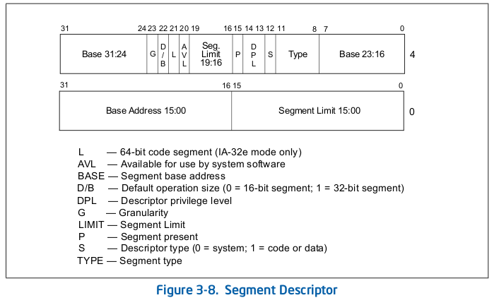
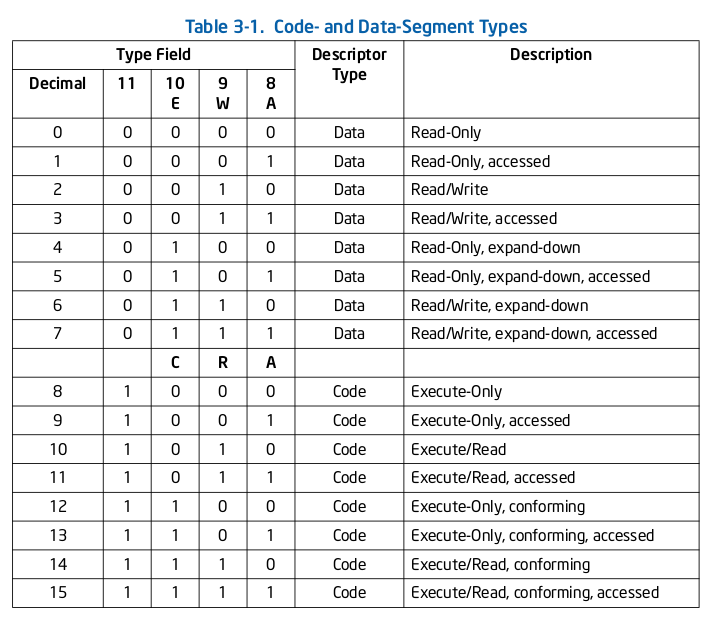
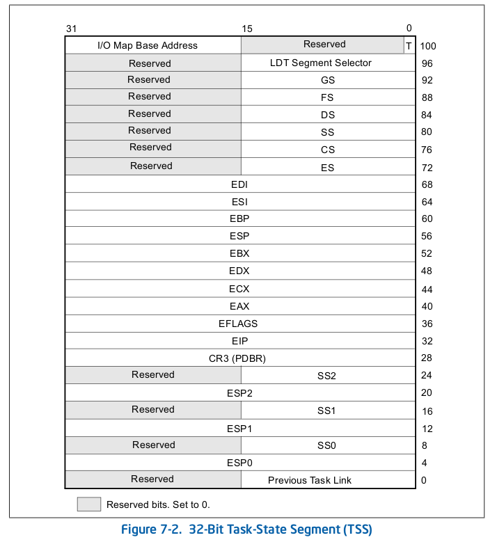
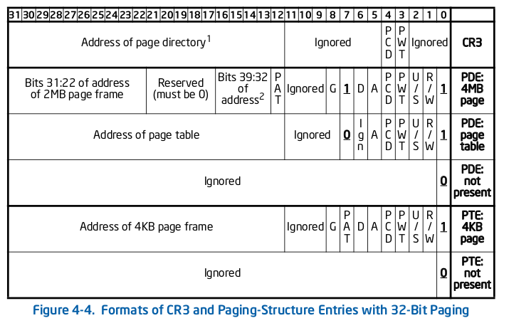

1 Que poner en el resumen
1.1 [X] Descriptores de la GDT
1.2 TODO Descriptores de la IDT
1.3 [X] Descriptores de las esctructuras de paginación
1.4 [X] Como es la TSS
1.5 [X] Como convertir una direccion logica -> lineal -> fisica
1.6 Ejemplos de funciones del TP3:
1.6.1 En C
1.6.2 En Assembly
1.7 Descriptores de la GDT


1.8 TSS

eflags = 0x202 con interrupciones, 0x2 sin
iomap = 0xFFFF
1.9 Paging
1.9.1 Estructuras

- CR3
- Address of page directory: los 12 bits menos significativos se asumen que son 0.
- Page Directory Entry (PDE)
- Address of page table: los 12 bits menos significativos se asumen que son 0.
- R/W: Si se puede escribir o leer y escribir. Si el bit WP del CR0 esta en 0, el kernel siempre puede escribir.
- U/S: Si es 0, solo si tenes un CPL = 0 podes tocar estas páginas.
- A: Accessed. Si fue leída o escrita alguna página a la que apunta esto. La dessetea el SO.
- Page Table Entry (PTE)
- D: Dirty. Si fue escrita alguna página a la que apunta esto. La dessetea el SO.
- A, U/S, R/W: Lo mismo que en el PDE.
1.9.2 Dirección logica -> virtual -> física
- Modo real
logica = selector_de_segmento:offset fisica = selector_de_segmento << 4 + offset
- Modo protegido
logica = selector_de_segmento:offset selector_de_segmento[0:1] = RPL = requested priviledge level. selector_de_segmento[2] = TI = Si es 1, el segmento esta en la LDT. Sino, en la GDT. selector_de_segmento[3:15] = índice en la GDT/LDT. entrada_GDT = GDTR + selector_de_segmento.indice virtual = entrada_GDT.Base + logica.offset virtual[0:11] = offset virtual[12:21] = table virtual[22:31] = directory directory_entry = CR3 + virtual.directory page_table_entry = directory_entry.address + virtual.table fisica = page_table_entry.address + virtual.offset
1.10 IDT
1.10.1 IDTR
idtr[0:15] = limit idtr[16:47] = base = direccion lineal en donde empieza la IDT
Se carga poniendo en algún lugar del código:
idt_info:
dw idt_end - idt_start - 1
dd idt_start
Y después:
lidt [idt_info]
1.10.2 IDT Entry Descriptor
struct IDTDescr {
uint16_t offset_1; // offset bits 0..15
uint16_t selector; // a code segment selector in GDT or LDT
uint8_t zero; // unused, set to 0
uint8_t type_attr; // type and attributes, see below
uint16_t offset_2; // offset bits 16..31
};
type_attr:
7 0
+---+---+---+---+---+---+---+---+
| P | DPL | S | GateType |
+---+---+---+---+---+---+---+---+
P = present
DPL = Descriptor Priviledge Level = el nivel de privilegios mínimo que tiene
que tener el descriptor que llama para que lo pueda hacer.
S = 0 para interrupt y trap gates
GateType = si 0x5 => 32-bit task gate
si 0x6 => 16-bit interrupt gate
si 0x7 => 16-bit trap gate
si 0xE => 32-bit interrupt gate
si 0xF => 32-bit trap gate